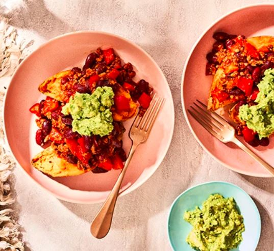

Turkey chili recipe
Achieve all five of your five-a-day with this turkey chilli. Full of healthy ingredients and gut-friendly spices,
you can’t go wrong with a bowl for dinner.
Ingredients:
- 1 tbsp rapeseed oil
- 500g turkey thigh mince
- 2 large garlic cloves
- 1 chili,deseeded and chopped
- 1/2 tsp dried oregano
- 2 tsp ground coriander
- 1 tsp ground cumin
- 1 tbsp smoked paprika
- 500g carton passata
- 2 x 400g cans red kidney beans
- 2 red pappers,deseeded and diced
- 4 small sweet potatoes
- 2 avocados
- 1 lime,juiced
Recipe instructions:
- Heat the oil in a large pan over a medium heat, then tip in the mince and break it up using a wooden spoon.
Stir in the garlic and chilli, and cook for 10 mins until the mince is cooked through. Add the herbs and spices,
and cook for a minute more. - Pour in the passata, the reserved liquid from the beans, the bouillon powder and peppers.
Cover and cook for 15-20 mins until slightly thickened. Tip in the beans and cook for 3-5 mins more. - Meanwhile, prick two of the sweet potatoes all over using a fork, then microwave on high for 7-10 mins until tender.
Mash one of the avocados with half the lime juice in a small bowl. - To serve, halve the potatoes and spoon over half the chilli, then finish with the mashed avocado. Chill the remainder for another day.
The chilli will keep covered and chilled for four days or frozen for three months.Reheat in a microwave or pan over low heat until piping hot
Serve with the remaining sweet potatoes and mashed avocado and lime juice, as described above.